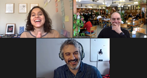
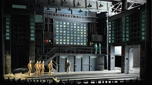

Land acknowledgment statement
Early last academic year the Office of the Dean launched a Diversity, Equity, and Inclusion task force comprising students, faculty, and staff. One of the
Early last academic year the Office of the Dean launched a Diversity, Equity, and Inclusion task force comprising students, faculty, and staff. One of the
The Virginia Wadsworth Wirtz Center for the Performing Arts is celebrating the long-awaited return of audiences to its in-person productions with an exciting 2021-22 season
After more than a year of dark theaters and bereft artists and fans, Broadway triumphantly reopened in August with Antoinette Chinonye Nwondu’s play Pass Over,
Multi-award-winning actor, musician, writer, and comedian John Leguizamo will be the first featured guest in the 2021–22 Dialogue with the Dean series. The artist will
Thunderstorms may have postponed the School of Communication’s June 12 Convocation by a couple of hours, but that wasn’t going to stop the class of
The Television Academy’s nominees for the 73rd Primetime Emmy Awards include high-profile School of Communication alumni as well as a current faculty member. Greg Berlanti
The School of Communication has a message for those long left out of the dialogue: we’re here, we’re listening, and we’re taking action. In a
Despite our near-dependance on technology to communicate, work, socialize, and consume, we don’t fully understand our digital traces. And given Big Tech’s global dominance and
The 2020 Pulitzer Prize–winning musical A Strange Loop has been lauded for going with unfiltered honesty where few other mainstream theatrical works have dared: to the center

Universal stories transcend language and place yet also are anchored by them, according to two spring-quarter campus speakers—a British-Nigerian playwright and a Brazilian alumnus with

Northwestern MFA stage design students were among the winners of a special virtual studio version of the Prague Quadrennial, a showcase of the best theatre